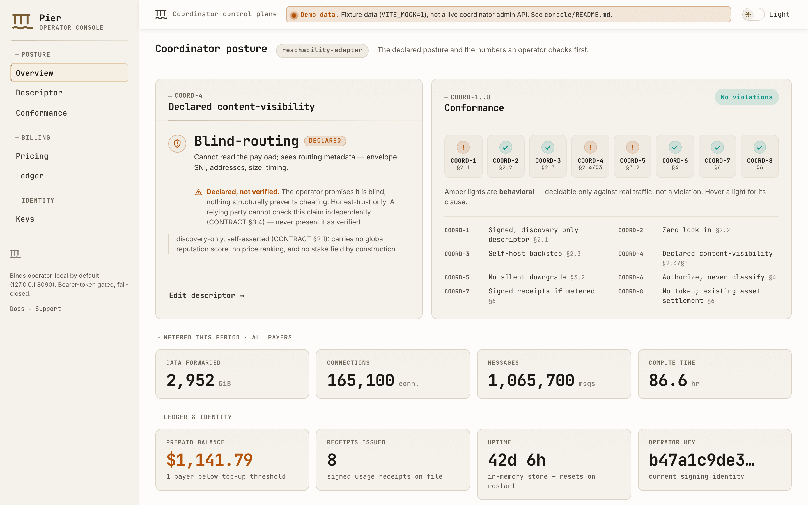

KOTVA coordinator reference · pre-alpha
A broker that can prove it isn't reading your traffic.
Ephor is the reference implementation of KOTVA's coordinator contract — the spec's answer to the parts of a peer-to-peer system that genuinely need one party in the middle: routing packets past a NAT, bridging to legacy mail, giving two strangers a place to rendezvous. Every kind it houses is accountable, swappable, and self-hostable, and what it can see of your traffic is declared in a signed descriptor and checked against real behaviour — not just promised in a README.
@vulos/relay-client JS
SDK remain the working implementation in production today.
Read the full status →

console/ built with
VITE_MOCK=1. The banner at the foot of the actual page says so; this crop
doesn't reach it. Declared visibility, the COORD-1..8 strip, and a "Declared, not
verified" warning are all on-screen precisely because none of them is a promise
this page is willing to make silently.The overseer, not the owner
Ephor is Greek for overseer.
In Sparta, an ephor was one of five magistrates elected annually to check the kings' power — never sovereign, never reappointed. The same shape survives in the software: a coordinator is hired for a function, not depended on for identity. It sits on the wire between two peers only because one of KOTVA's ten coordinator kinds needs to — routing around a NAT, bridging to legacy mail, brokering a rendezvous — and it leaves no residue when you stop hiring it: no migration, no re-keying, no lock-in.
Content-blind by construction
Content-visibility is a checkable type, not a policy promise.
broker-economics models it as VisibilityClass
(blind / blind-routing / terminating) crossed with
AssuranceLevel (structural / attested /
declared) — CONTRACT §3 — and broker-conformance's
COORD-1..8 harness checks a coordinator's implementation against its own
declaration instead of trusting prose. Some clauses are decidable from the descriptor
alone; COORD-5 (observed-vs-declared visibility) is behavioral and can only be caught
against real traffic, so the harness marks it Outcome::Behavioral instead of
falsely passing it.
A coordinator authorizes from identity and rate; it never classifies content on a delivery path — that judgement stays with the recipient.
declared is an honest-trust promise, not a proof —
only structural (no key exists to misuse) and attested (a TEE
proves it) are independently checkable, and the console says so on-screen rather than
implying otherwise.One contract, ten kinds
Every coordinator function lives behind the same contract.
A coordinator is any party providing a function the peer-to-peer substrate can't provide reciprocally: a global view, a scarce resource, a legal anchor. Ephor houses every kind KOTVA defines behind one contract — four are running implementations today, six are signed, conformance-tested scaffolds whose own function (ranking, arbitration, attestation…) is disclosed future work, not a silent stub.
| Kind | Provides | Visibility | Status |
|---|---|---|---|
| gateway | Legacy mail bridge — MX, DKIM, SMTP/IMAP/POP3 | terminating (the one disclosed exception) | built · 320 tests |
| relay | Mesh reachability for NAT'd peers — real libp2p Circuit Relay v2 | blind / structural | built · 12 tests |
| reachability-adapter | ngrok-style public subdomains, SNI-passthrough | blind-routing | built · 32 tests |
| media-relay | Scales calls via an external SFU, SFrame-sealed | blind-routing / structural | built · 24 tests |
| indexer | Search/discovery over an opt-in public corpus | terminating / declared | scaffold |
| labeler | Opt-in, subscribable moderation labels | terminating / declared | scaffold |
| matcher | Real-time supply/demand matching | terminating / declared | scaffold |
| arbiter | Dispute resolution over disclosed evidence | terminating / declared | scaffold |
| oracle | Physical-world/real-fact attestation | terminating / declared | scaffold |
| compute | Outsourced computation | terminating / declared | scaffold |
Economics
No token. Existing rails, signed receipts.
A signed Descriptor carries an identity, a kind, a declared
visibility, and an optional tariff — structurally nothing else. There is no stake field
and no price-ranking field to invent one from later. Billing runs on prepaid credit:
a payer tops up a balance over an existing stablecoin or fiat rail, usage debits it, and
every debit gets a signed UsageReceipt the payer can verify. Read
.verify() honestly: it proves the coordinator signed a claim, never
that the claim is true, and never that no unreceipted charge happened elsewhere — a
one-directional audit, demonstrated by a test rather than asserted in prose. Ephor itself
holds no funds and brokers no settlement; it adapts onto rails it doesn't operate.
Disclosed, not discovered
Honest limits
Residuals the project states about itself, not ones a reader has to find:
- reachability-adapter's control channel is not yet Noise-encrypted. Key-authenticated (challenge-response, replay-inert) but still plain TCP — an on-path attacker can observe or DoS it, though not impersonate a box. Not public-safe until that lands.
- Billing receipts are a one-directional audit.
UsageReceipt::verify()proves the coordinator's key signed a claim, never that the claim is true or complete. - Settlement and stake are seams, not rails. Each ships one mock reference adapter; the real Stellar/Hyperswitch adapter is untested against a live network.
- Six of the ten coordinator kinds are scaffolds. A real signed descriptor and conformance posture exist; the kind's own function does not yet.
- The Go reverse-tunnel relay and the JS SDK remain the working implementation in production — this Rust workspace is the reference, not yet the default, until it's proven and that note is removed.
Try it
Run the console, or build the workspace.
# http://localhost:5173, VITE_MOCK=1 by default
cd console
pnpm install
pnpm dev
cargo build
cargo test # 556 tests
cargo clippy --all-targets -- -D warnings
go build ./... go test -race ./...
./scripts/install.sh \ --domain relay.example.com
Full commands, flags and CI gates: README → Development.
Read the contract. Read the code.
MIT OR Apache-2.0. Every claim on this page traces to a crate, a test, or the README it was drawn from.